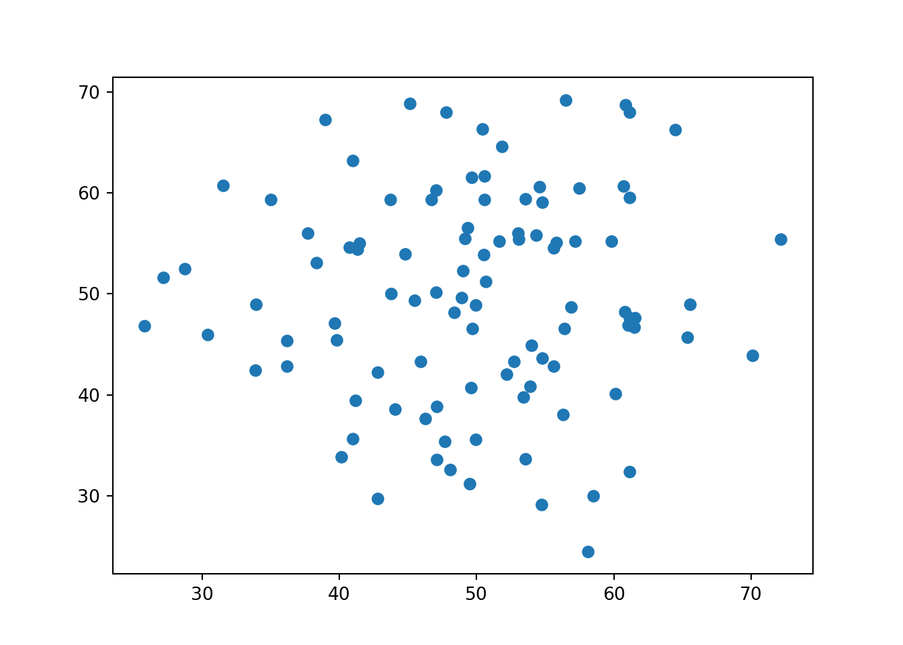

May 9, 2021
This is an example of Quick plot python code in R. This particular example uses two python code chunks
library(reticulate)
py_install ("numpy")
py_install("matplotlib")
py_install("pandas")
library(reticulate)
matplotlib <- import("matplotlib")
matplotlib$use("Agg", force = TRUE) import numpy as np
import matplotlib.pyplot as plt
x=np.random.normal(50,10,100)
y=np.random.normal(50,10,100)
plt.scatter(x,y)
The numpy stack was used to generate random numbers and the Matplotlib stack was used to help create the scatter plot. First, the numpy function creates 100 random numbers from a normal distribution with a mean of 50 and a standard deviation of 10. These random draws were both set equal to variables x and y.“plt.scatter” created a scatterplot between variables x and y. This plot can be similarly created in ggplot.
Reticulation
We can do the same thing by instead defining x (“x2”) in R rather than python.
x2<- rnorm(100, mean=50, sd=10)import numpy as np
import matplotlib.pyplot as plt
y2=np.random.normal(50,10,100)
plt.scatter(r.x2,y2) The following code communicated x2 defined in R to be used in the python matplotlib scatter plot. This was denoted using r. to label the R-defined variable “x2”.
The following code communicated x2 defined in R to be used in the python matplotlib scatter plot. This was denoted using r. to label the R-defined variable “x2”.
This is the lecture material I referenced to produce my code. Cheers!